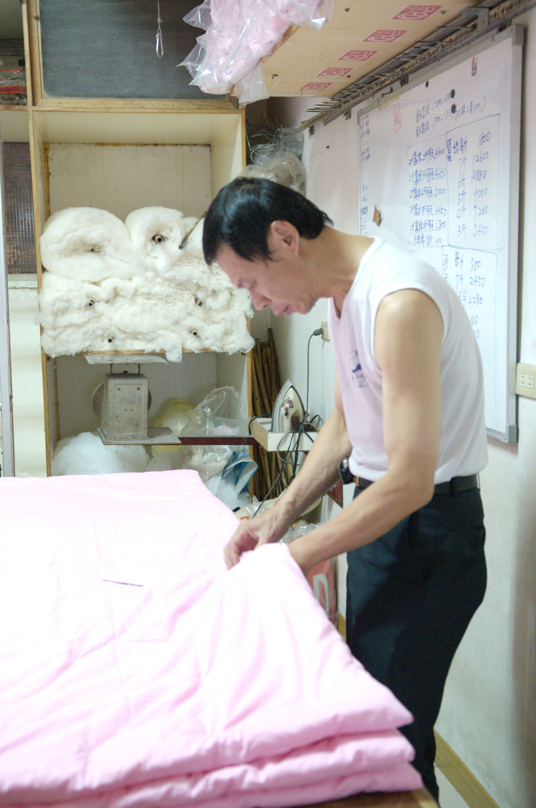
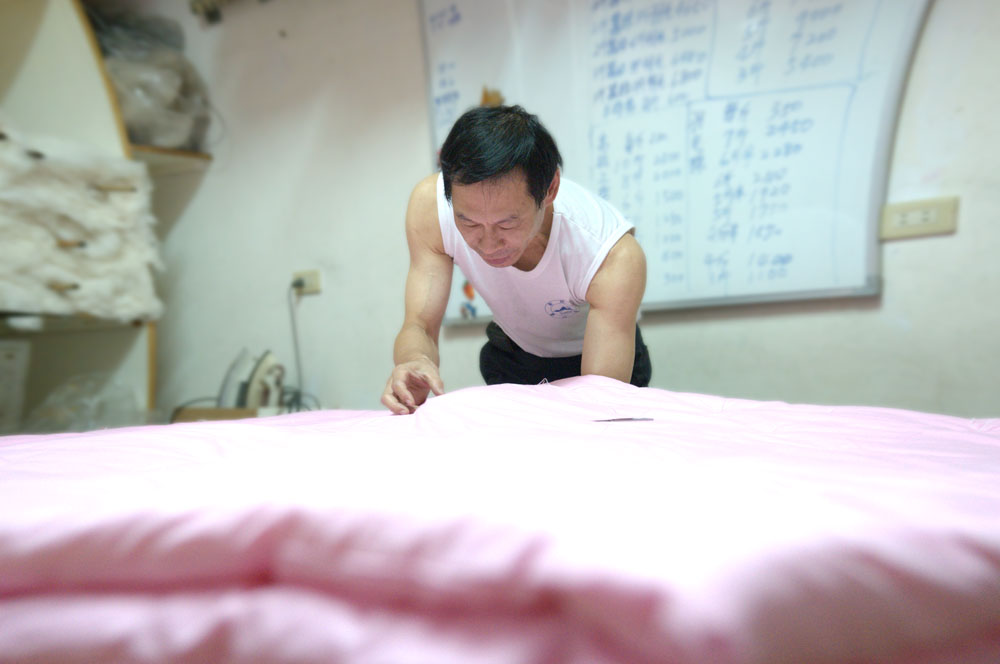
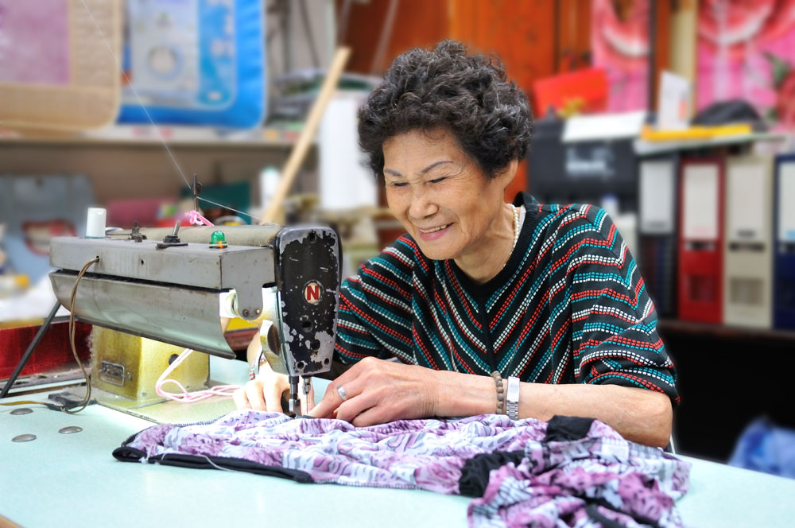

「上興」在台語中代表著最興旺的祝福。這份溫暖的起點從 1977 年開啟，並於 1978 年正式落腳新莊，自此伴隨著在地居民度過無數個寒暑。時至今日，新莊老街的這份棉被香，已成為許多家庭橫跨數代人的睡眠印記。
我們始終堅持「手工製作」的初衷，每一層蠶絲的細膩堆疊，都是職人對睡眠品質的極致執著。在快節奏的時代，「上興」希望打破舊有手工被「沉重、過時」的刻板印象，將老師傅數十年的手藝與高品質用料結合，讓不分年齡層的顧客，都能擁有一條量身訂製、會呼吸的天然被褥。
店門口的招牌不只是名字，更是一份對「穿針引線」職人魂的守候。我們不單提供寢具，更為客人翻新盛載回憶的舊被、悉心籌備婚事所需的喜氣。
堅持傳統手工拉絲，多層堆疊比機器被更貼身透氣。
精選天然棉花彈打，充滿陽光味道與紮實的包覆感。
提供謝籃與米篩等全套禮俗建議，傳承新婚喜氣。
專業工法重梳舊被，讓長輩留下的溫暖得以延續。
依體質需求現場調整重量，打造專屬的睡眠溫度。
親臨新莊老街實地觸摸，感受機器無法取代的手感。
堅持傳統手工拉絲，多層堆疊比機器更貼身，純天然長纖維不跑棉。
精選天然棉花反覆彈打，充滿陽光味道與紮實包覆感，守護整夜溫暖。
依個人體質需求現場調整重量與斤數，打造專屬於您的睡眠溫度。
提供謝籃、米篩、烘爐瓦片等全套禮俗備品，為新人傳承百年喜氣。
專業工法重梳舊被，將盛載回憶的舊被賦予新生命，延續長輩的愛。
保護珍貴的手工蠶絲與棉被，材質舒適親肌，提升睡眠層次。
依照頭頸曲線提供支撐，與手工被完美搭配，享受全方位的放鬆。
利用製作被褥剩餘的優質料件，打造小巧精緻且支撐力佳的隨身枕。
關於斤數挑選或特殊需求，歡迎親臨新莊老街店鋪體驗手工觸感。